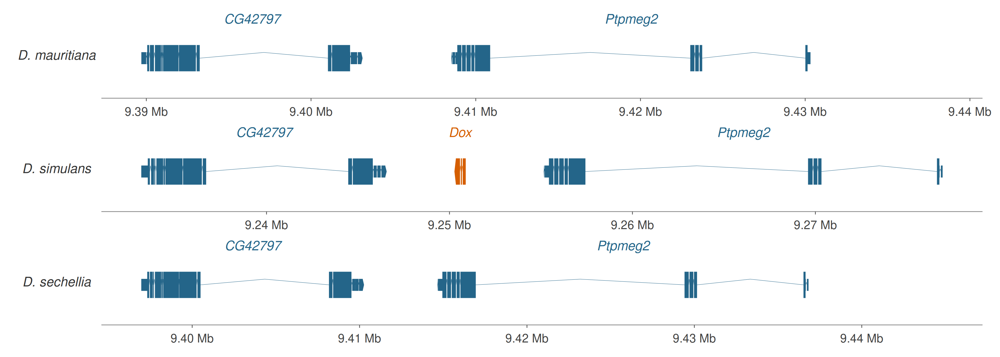
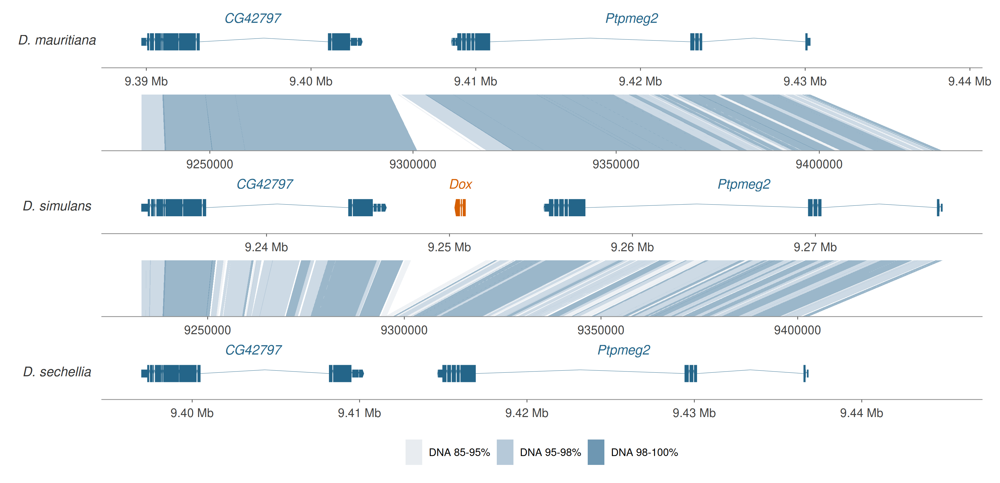
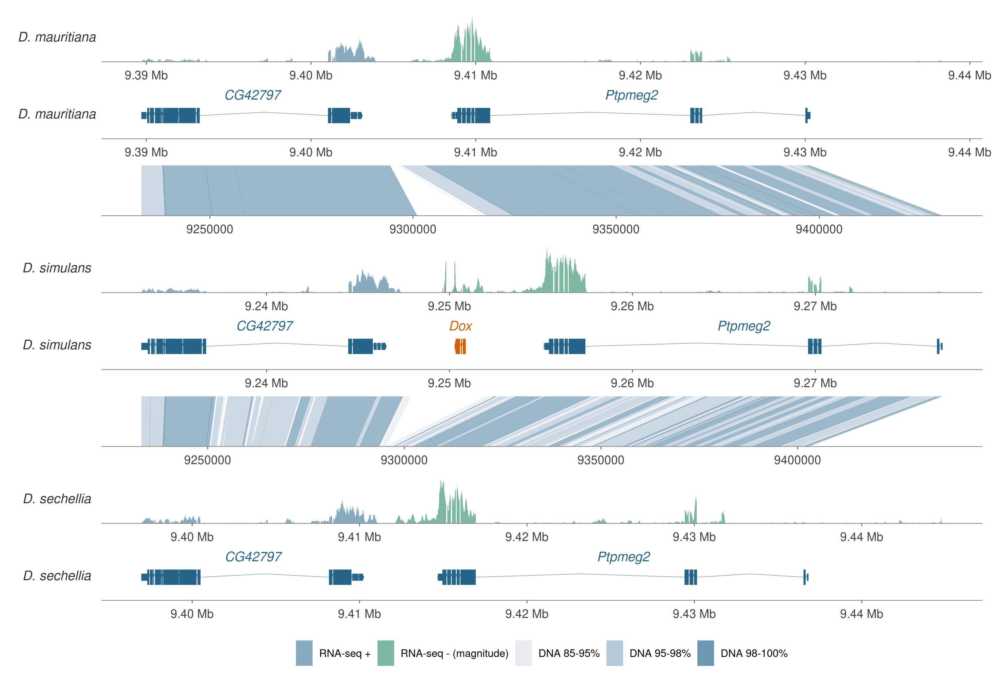
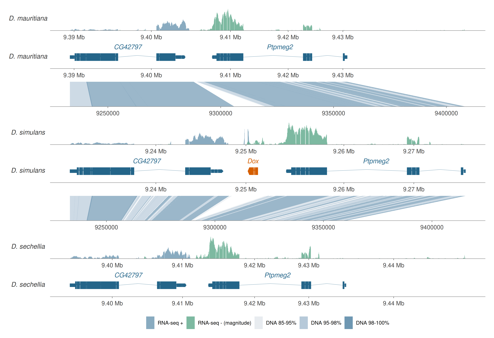

Build a three-species synteny figure layer by layer
Source:vignettes/dox-synteny-demo.Rmd
dox-synteny-demo.RmdThe example
This tutorial builds a compact comparison of Drosophila
mauritiana, D. simulans, and D. sechellia. The
displayed windows contain two conserved flanking genes,
CG42797 and Ptpmeg2, with an additional
Dox coding model in D. simulans. There are 2, 3,
and 2 displayed gene models, respectively. The locus comes from Extended
Data Figure 5 of Vedanayagam et al. (2021).
The example connects local gene order to exon structure, nucleotide alignment, and transcriptional signal. It is a visualization exercise; a chromosome-wide macrosynteny analysis would require a larger genomic window.
We will first draw three annotation panels, add two nucleotide-link panels, and finally place a testis RNA-seq panel above each annotation. Each stage starts with a data object and adds ordinary ggexon/ggplot2 layers. The code uses the public object APIs and small bundled files, so downloading genomes or remapping reads is unnecessary when following the tutorial.
1. Inspect the inputs
Use a ggexon version that includes
coverage_panel_height. The complete workflow runs on macOS
or Linux because rtracklayer’s BigWig backend is unavailable on Windows.
The GTF/PAF annotation and linkage steps do not require BigWig
support.
library(ggexon)
library(ggplot2)
demo_dir <- system.file("extdata", "dox_synteny", package = "ggexon")
stopifnot(nzchar(demo_dir))
object_dir <- file.path(demo_dir, "objects")
windows <- read.delim(file.path(demo_dir, "windows.tsv"))
species_ids <- windows$species
knitr::kable(windows[, c("name", "accession", "chrom", "start", "end", "sample")],
row.names = FALSE)| name | accession | chrom | start | end | sample |
|---|---|---|---|---|---|
| D. mauritiana | GCF_004382145.1 | NC_046672.1 | 9389704 | 9438333 | GSM5611558 |
| D. simulans | GCA_004382185.1 | CM015611.1 | 9233164 | 9276944 | GSM7039340 |
| D. sechellia | GCF_004382195.1 | NC_045954.1 | 9396969 | 9444821 | GSM5611560 |
All plotting files use X as a chromosome-name alias.
Their positions remain coordinates on the assemblies listed above,
rather than positions within a short FASTA window. GTF starts and ends
are 1-based inclusive. PAF source files use their standard 0-based
half-open coordinates; ggexon converts those starts when importing them.
Do not subtract one again after import. Supply integer genomic bounds
for object queries and stored panel windows.
The objects/ directory contains native file views of the
verified tables:
| Files | Contents | Object used below |
|---|---|---|
Dmau.gtf, Dsim.gtf,
Dsech.gtf
|
Gene/transcript spans and disjoint CDS/UTR pieces |
SynIndividual, with a feature
annotation |
Dmau_Dsim.paf,
Dsim_Dsech.paf
|
The two sets of ungapped LASTZ blocks | SynPairAlignment |
*.RNAplus.bw,
*.RNAminus.bw
|
Forward signal and reverse-strand magnitude | SynBigWigAnnotation |
The GTFs are curated display models derived from the source
annotations, not new native annotations. CDS and UTR pieces do not
overlap. Selecting annotation_type = "all" draws both
types, with thinner UTR boxes. The Dox model contains three coding
exons, with no reconstructed UTRs. CDS phase was not reconstructed in
these display GTFs.
2. Build the annotation data object
A SynIndividual holds one assembly’s annotation and
associated tracks. A SynSpecies collects the three
individuals and, later, their alignments.
SynIndividual(annotation_file = ...) attaches a default
feature annotation; the plotting layers query it when the figure is
built.
comparison <- SynSpecies(name = "Dox insertion locus")
for (id in species_ids) {
w <- windows[windows$species == id, ]
individual <- SynIndividual(
id = id,
annotation_file = file.path(object_dir, paste0(id, ".gtf")),
annotation_format = "gtf",
metadata = list(assembly = w$accession, original_contig = w$chrom)
)
comparison <- add_individual(comparison, individual)
}
individual_names(comparison)
#> [1] "Dmau" "Dsim" "Dsech"
# Store three annotation rows with the exact source windows.
annotation_panels <- data.frame(PANEL = 1:3, ROW = 1:3, COL = 1L,
track = species_ids, species = species_ids, panel_type = "annotation",
xlim_chr = "X", xlim_min = windows$start - 1L, xlim_max = windows$end + 1L)
species_layout(comparison) <- SynLayout(panels = annotation_panels,
free = list(x = TRUE, y = TRUE))
# Query the object to inspect its gene records.
dsim_genes <- query_features(comparison@individuals[["Dsim"]],
chr = "X", feature_type = "gene", all = TRUE)
as.data.frame(dsim_genes)[, c("seqnames", "start", "end", "strand", "gene_name")]
#> seqnames start end strand gene_name
#> 1 X 9233164 9246558 + CG42797
#> 2 X 9250280 9250879 - Dox
#> 3 X 9255161 9276944 - Ptpmeg2A full genome FASTA is not needed to draw imported features. The
bundled FASTAs contain only the selected windows, so they are not passed
as whole-chromosome genomes to these constructors. The assembly and
original contig remain in the individual metadata and the source
manifest. The documented individuals slot provides access
to an individual by its ID; its annotations slot stores the
named annotation objects.
Define colors, windows, and a common style
Keep the full selected interval visible in every stage. A named list of x limits lets each species retain its own coordinates. RNA and annotation panels will share the corresponding genomic window later. A one-base integer display margin keeps the half-base rectangle edges inside the panel limits; the files still contain only the original source windows.
palette <- c(
"CG42797" = "#246589", "Ptpmeg2" = "#246589", "Dox" = "#D55E00",
"RNA +" = "#749CB5", "RNA -" = "#67AD91",
"85-95%" = "#E2E7ED", "95-98%" = "#A4BCD0", "98-100%" = "#497D9F"
)
window_limits <- setNames(lapply(seq_len(nrow(windows)), function(i)
c(windows$start[i] - 1L, windows$end[i] + 1L)), species_ids)
chromosomes <- setNames(rep("X", length(species_ids)), species_ids)
annotation_limits <- setNames(rep(list(c(0.5, 2.1)), length(species_ids)), species_ids)
strip_labels <- c(Dmau = "D. mauritiana", Dsim = "D. simulans",
Dsech = "D. sechellia", link_Dmau_Dsim = "", link_Dsim_Dsech = "")
text_size <- 9 / (72.27 / 25.4) # ggplot2 geom text sizes use millimeters.
plot_style <- list(
facet_genomics(vars(track), ncol = 1, scales = "free",
strip.position = "left", labeller = as_labeller(strip_labels),
xlim = window_limits, xlim_chr = chromosomes,
link_panel_height = 0.5, coverage_panel_height = 0.5,
link_axis = "none", link_strip = "blank", annotation_axis = "all"),
scale_panel_annotation("free_y", limits = annotation_limits),
scale_fill_manual(values = palette,
breaks = c("RNA +", "RNA -", "85-95%", "95-98%", "98-100%"),
labels = c("RNA-seq +", "RNA-seq - (magnitude)",
"DNA 85-95%", "DNA 95-98%", "DNA 98-100%"), name = NULL),
scale_colour_manual(values = palette, guide = "none"),
scale_x_ggexon_genomic(intron_factor = 1, n.breaks = 4,
labels = scales::label_number(scale = 1e-6, suffix = " Mb", accuracy = 0.01)),
theme_ggexon_track(base_size = 9, show_x_axis = TRUE,
show_y_axis = FALSE, show_x_grid = FALSE, show_legend = TRUE),
theme(strip.text.y.left = element_text(angle = 0, face = "italic"),
strip.background = element_blank(), panel.border = element_blank(),
legend.position = "bottom", legend.key.width = grid::unit(4, "mm"),
panel.spacing.y = grid::unit(0.3, "lines"),
plot.background = element_rect(fill = "white", colour = NA),
plot.margin = margin(8, 12, 8, 8)),
labs(x = NULL, y = NULL)
)The facet sets physical row heights. Annotation rows have relative height 1; linkage and RNA rows each have height 0.5. This setting changes the space allocated to a panel. The y limits control the signal drawn within that space and are set separately.
3. Plot only the annotations
Build the annotation layers separately from the data object. The
first layer queries the imported transcript structures; the second adds
gene names. Both inherit their data from
ggexon(comparison).
annotation_layers <- list(
geom_exon2(
aes(fill = gene_name, colour = gene_name, ymin = 1,
xmin = xmin - 0.5, xmax = xmax + 0.5),
annotation_type = "all", exon_height = 0.48,
compress_introns = FALSE, utr_height = 0.45, cds_height = 1,
intron_shape = "chevron", intron_peak = 0.22, arrow_width = 80,
linewidth = 0.1, show.legend = FALSE),
geom_genelabel(aes(colour = gene_name, ymin = 1),
force_flat = TRUE, exon_height = 0.48, label_offset_fraction = 1.2,
show_link = FALSE, size = text_size, fontface = "italic", show.legend = FALSE)
)The positional columns and transcript identifiers are resolved from
the annotations. gene_name supplies the fill and outline
mappings, so Dox uses the same orange for its exon fill, intron
connectors, and direction arrow. Thin outlines keep the short exon gaps
visible. ymin = 1 keeps the models on a common row, and the
half-base offsets make box edges span their inclusive intervals.
geom_genelabel() queries the gene records and adds the
names.
p_annotation <- ggexon(comparison) + annotation_layers + plot_style
p_annotation
At this stage there are three annotation panels. The blue models show the conserved flanks; the orange model marks the additional Dox coding locus in Dsim. UTR pieces are thin, CDS pieces are thick, and terminal arrows indicate strand. Genomic distances are retained because intron compression is disabled.
4. Attach alignments and add the linkage layers
An alignment belongs to the species collection because it connects two individuals. Attach each PAF with the same IDs used when constructing the individuals. In these files, the upper species is the target and the lower species is the query.
comparison <- add_pairwise_alignment(comparison,
SynPairAlignment(name = "Dmau_Dsim", target_individual = "Dmau",
query_individual = "Dsim", file = file.path(object_dir, "Dmau_Dsim.paf"),
format = "paf"))
comparison <- add_pairwise_alignment(comparison,
SynPairAlignment(name = "Dsim_Dsech", target_individual = "Dsim",
query_individual = "Dsech", file = file.path(object_dir, "Dsim_Dsech.paf"),
format = "paf"))
# Insert a link row between each neighboring pair of annotation rows.
linked_panels <- data.frame(PANEL = 1:5, ROW = 1:5, COL = 1L,
track = c("Dmau", "link_Dmau_Dsim", "Dsim", "link_Dsim_Dsech", "Dsech"),
panel_type = c("annotation", "link", "annotation", "link", "annotation"),
tspecies = c(NA, "Dmau", NA, "Dsim", NA),
qspecies = c(NA, "Dsim", NA, "Dsech", NA))
wi <- match(linked_panels$track, windows$species)
linked_panels$species <- windows$species[wi]
linked_panels$xlim_chr <- ifelse(is.na(wi), NA_character_, "X")
linked_panels$xlim_min <- windows$start[wi] - 1L
linked_panels$xlim_max <- windows$end[wi] + 1L
species_layout(comparison) <- SynLayout(panels = linked_panels,
free = list(x = TRUE, y = TRUE))
blocks <- pairwise_alignment_data(comparison, alignment = "Dmau_Dsim")
head(blocks[, c("tchr", "tstart", "tend", "qchr", "qstart", "qend", "nmatch", "alen")])
#> tchr tstart tend qchr qstart qend nmatch alen
#> 1 X 9389708 9391056 X 9233164 9234512 1320 1349
#> 2 X 9390980 9393590 X 9234439 9237049 2581 2611
#> 3 X 9393578 9395394 X 9237019 9238835 1812 1817
#> 4 X 9395388 9404797 X 9238828 9248237 9382 9410
#> 5 X 9405255 9405355 X 9251708 9251808 92 101
#> 6 X 9405479 9406993 X 9252035 9253549 1476 1515These are the same 41 Dmau-Dsim blocks and 98 Dsim-Dsech blocks
stored in links.tsv. LASTZ generated the ungapped, chained
alignments; the retained blocks are at least 80 bp long and at least 85%
identical. PAF mapQ is 255 (unknown), rather than an estimated mapping
quality. No block is removed because it overlaps Dox.
identity_breaks <- c(85, 95, 98, 100)
identity_labels <- c("85-95%", "95-98%", "98-100%")
link_layers <- list(
geom_nuclink(alignment = "Dmau_Dsim",
aes(fill = cut(100 * nmatch / alen, breaks = identity_breaks,
include.lowest = TRUE, labels = identity_labels)),
alpha = 0.55, colour = NA),
geom_nuclink(alignment = "Dsim_Dsech",
aes(fill = cut(100 * nmatch / alen, breaks = identity_breaks,
include.lowest = TRUE, labels = identity_labels)),
alpha = 0.55, colour = NA)
)alignment = ... selects a stored alignment by name. The
layer resolves its species, chromosomes, and interval endpoints from
that object. Fill encodes 100 * nmatch / alen, the
percentage of matching bases in each ungapped block. This is nucleotide
identity, not an orthology assignment.
p_links <- ggexon(comparison) + annotation_layers + link_layers + plot_style
p_links
The updated data object now supplies alignments as well as features.
We start a new ggexon(comparison) and reuse the annotation
layers, then add the link layers. An earlier plot keeps the object it
was created with; updating the comparison variable does not
retroactively add data to p_annotation.
The result has five panels: annotation, linkage, annotation, linkage, annotation. Each ribbon connects real intervals on the two adjacent genomic rulers. The link panels have no independent genomic axis. Around Dox, the additional Dsim sequence interrupts the otherwise conserved local structure.
5. Attach RNA-seq tracks to the individuals
Each individual receives two named signal annotations:
RNA_plus and RNA_minus. The minus files store
the magnitude of the original reverse signal as a nonnegative score, so
both strands can be drawn above zero. The signed audit values remain in
coverage.tsv.gz.
for (id in species_ids) {
individual <- comparison@individuals[[id]]
signal_unit <- if (id == "Dsim") "primary read depth" else "deposited signal"
individual <- add_annotation(individual,
SynBigWigAnnotation(name = "RNA_plus",
bigwig_file = file.path(object_dir, paste0(id, ".RNAplus.bw")),
metadata = list(transcript_strand = "+", signal_unit = signal_unit)))
individual <- add_annotation(individual,
SynBigWigAnnotation(name = "RNA_minus",
bigwig_file = file.path(object_dir, paste0(id, ".RNAminus.bw")),
metadata = list(transcript_strand = "-", signal_unit = signal_unit,
score_handling = "reverse-strand magnitude")))
comparison <- add_individual(comparison, individual)
}
names(comparison@individuals[["Dsim"]]@annotations)
#> [1] "default" "RNA_plus" "RNA_minus"The files contain local testis RNA-seq from biological replicate 1. Dmau and Dsech retain deposited signal values. Dsim uses unnormalized primary read depth from the complete original library remapped to the plotted assembly. These units differ between the middle and outer species; the figure compares signal shape and genomic position rather than expression abundance between species.
Set y limits from the data objects
Query each strand over the exact selected window, then find the
larger peak. A y maximum of 1.1 * peak puts each species’
highest peak at approximately 91% of its RNA panel height. This changes
the view without changing the stored scores, smoothing the signal, or
clipping its maximum.
peaks <- setNames(vapply(species_ids, function(id) {
individual <- comparison@individuals[[id]]
w <- windows[windows$species == id, ]
max(vapply(c("RNA_plus", "RNA_minus"), function(name) {
signal <- query_signal(get_annotation(individual, name), "X", w$start, w$end)
max(S4Vectors::mcols(signal)$score)
}, numeric(1)))
}, numeric(1)), species_ids)
rna_limits <- lapply(peaks, function(peak) c(0, 1.1 * peak))
knitr::kable(data.frame(species = species_ids, peak = unname(peaks),
unit = c("deposited signal", "primary read depth", "deposited signal")),
row.names = FALSE)| species | peak | unit |
|---|---|---|
| Dmau | 313.49 | deposited signal |
| Dsim | 276.00 | primary read depth |
| Dsech | 145.85 | deposited signal |
Store the interleaved panel order
Use an explicit SynLayout to put each RNA panel
immediately above its own annotation. Coverage and annotation have the
same public track name, with panel_type
distinguishing their roles. The two linkage rows name their source
species. Their endpoints will continue to use annotation panels.
panels <- data.frame(
PANEL = 1:8, ROW = 1:8, COL = 1L,
track = c("Dmau", "Dmau", "link_Dmau_Dsim", "Dsim", "Dsim",
"link_Dsim_Dsech", "Dsech", "Dsech"),
panel_type = c("coverage", "annotation", "link", "coverage", "annotation",
"link", "coverage", "annotation"),
tspecies = c(NA, NA, "Dmau", NA, NA, "Dsim", NA, NA),
qspecies = c(NA, NA, "Dsim", NA, NA, "Dsech", NA, NA)
)
wi <- match(panels$track, windows$species)
panels$species <- windows$species[wi]
panels$xlim_chr <- ifelse(is.na(wi), NA_character_, "X")
panels$xlim_min <- windows$start[wi] - 1L
panels$xlim_max <- windows$end[wi] + 1L
species_layout(comparison) <- SynLayout(panels = panels,
free = list(x = TRUE, y = TRUE))
panels[, c("ROW", "track", "panel_type")]
#> ROW track panel_type
#> 1 1 Dmau coverage
#> 2 2 Dmau annotation
#> 3 3 link_Dmau_Dsim link
#> 4 4 Dsim coverage
#> 5 5 Dsim annotation
#> 6 6 link_Dsim_Dsech link
#> 7 7 Dsech coverage
#> 8 8 Dsech annotationAdd the coverage layers
Select the attached signal by its annotation name. Because the two coverage layers request the same species and windows, their forward and reverse signals share each species’ coverage panel. The species’ annotation panel remains a separate panel with its own y range.
rna_layers <- list(
geom_coverage(aes(fill = "RNA +"), annotation = "RNA_plus", alpha = 0.85),
geom_coverage(aes(fill = "RNA -"), annotation = "RNA_minus", alpha = 0.85)
)
p_rna <- ggexon(comparison) +
annotation_layers +
link_layers +
rna_layers +
plot_style +
scale_panel_coverage("free_y", limits = rna_limits)
p_rna
The complete figure has three RNA panels, three annotation panels, and two linkage panels. Blue RNA signal is the forward strand; green is the reverse strand’s magnitude. RNA peaks occupy similar fractions of their panels because the y scales are independent. The separate units and the values in the table above are needed when interpreting those peaks.
6. Adjust panel heights or compress genomic gaps
To make the linkage or RNA rows smaller, replace the facet with different physical heights. Reuse the other facet settings so the genomic windows and strip labels remain the same.
p_rna + facet_genomics(vars(track), ncol = 1, scales = "free",
strip.position = "left", labeller = as_labeller(strip_labels),
xlim = window_limits, xlim_chr = chromosomes,
link_panel_height = 0.3, coverage_panel_height = 0.4,
link_axis = "none", link_strip = "blank", annotation_axis = "all")A number is a height relative to an annotation row. A grid unit such
as grid::unit(8, "mm") sets an absolute height instead.
coverage_panel_height controls panel size;
scale_panel_coverage() controls its y range. Changing one
does not require changing the other.
The following scale compresses non-exonic gaps three-fold while retaining exon widths. It applies the same piecewise map to gene models, RNA intervals, and both ends of every link. Tick labels remain original genomic coordinates.
p_compressed <- p_rna + scale_x_ggexon_genomic(intron_factor = 3,
n.breaks = 4,
labels = scales::label_number(scale = 1e-6, suffix = " Mb", accuracy = 0.01))
p_compressed
Gaps include intergenic sequence as well as introns. The compressed view has no single uniform base-pair scale. Keep genomic coordinates in the objects; do not compress annotation, signal, or alignment coordinates before plotting.
7. Export the plots
Keep p_annotation, p_links, and
p_rna as separate objects so you can export each stage or
reuse it in a presentation. These commands write to your chosen working
directory, not into the installed package.
ggsave("dox-annotation.pdf", p_annotation, width = 9.5, height = 3.4,
units = "in", device = grDevices::cairo_pdf, bg = "white")
ggsave("dox-with-links.pdf", p_links, width = 9.5, height = 4.6,
units = "in", device = grDevices::cairo_pdf, bg = "white")
ggsave("dox-with-rna.pdf", p_rna, width = 9.5, height = 6.5,
units = "in", device = grDevices::cairo_pdf, bg = "white")
ggsave("dox-with-rna.png", p_rna, width = 9.5, height = 6.5,
units = "in", dpi = 300, bg = "white")Data provenance and interpretation
The flanks are common D. melanogaster RefSeq models
NM_132346 and NM_132348 mapped by UCSC GenArk
to the selected species assemblies. The orange model comes from the
published 474-nt Dox CDS. A unique, end-to-end, 100%-identity splice
alignment places it at Dsim X:9,250,280-9,250,879 on the minus strand,
with CIGAR 285M63N42M63N147M. Joining those three coding
exons and reverse-complementing them reconstructs the published CDS
exactly. The figure does not reconstruct the full Dox transcript.
RNA-seq comes from GSE185361,
specifically GSM5611558,
GSM7039340,
and GSM5611560.
The deposited Dsim BigWigs use an X chromosome of 22,976,950 bp, whereas
the plotted GenBank assembly has 23,123,156 bp. They were excluded. The
complete original library SRR23418969,
containing 40,381,684 read pairs, was remapped directly to
GCA_004382185.1 with minimap2’s splice:sr preset. No
coordinate offset was inferred.
Dsim coverage retains primary alignments with MAPQ >=20 and
excludes intron and deletion bases; overlapping mates each contribute to
read depth. Canonical splice motifs support a reverse-stranded paired
library, with read 1 antisense and read 2 sense. Input checksums, the
full reference sequence, the BAM chromosome dictionary, and the
complete-library read count were verified. The coverage agrees with an
independent samtools depth calculation at all 43,781 plotted bases.
Dsim-remapping-qc.json records these checks and the mapping
statistics. Dmau and Dsech retain author-deposited coverage values.
manifest.json records original source URLs, sequence and
data checksums, BigWig extraction ranges, and alignment settings.
objects/manifest.json records how the native tutorial files
relate to the verified tables, with input/output checksums. The
GTF/PAF/BigWig conversion changes file formats, not the underlying
genomic intervals or signal magnitudes.
For source details, see the primary locus paper, its Supplementary Table 1, the assembly paper, and the minimap2 short RNA-seq documentation.
To prepare the files again from the repository, run
remap-dsim-rnaseq.py, build-dox-data.py, then
Rscript data-raw/dox_synteny/prepare-dox-objects.R. The
large raw-read/reference/BAM cache stays outside the bundled inputs.
Rendering this article uses only the bundled files.